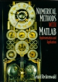

|  |
Numerical Methods with MATLAB: Implementations and Applications Gerald Recktenwald © 2000, Prentice Hall ISBN: 0201308606 |
This page contains links to individual m-files and data files appearing in Numerical Methods with MATLAB: Implementations and Applications by G.W. Recktenwald, copyright 2000, Prentice Hall.
The files listed here are for NMM Toolbox version 1.03, 20-Aug-2001. The latest version of the NMM Toolbox can be downloaded from www.me.pdx.edu/~gerry/nmm
This page automatically generated by makeHTMLindex on 19-Aug-2001 09:50:41
CorvRain.dat GPL100.dat GPL102.dat GPL104.dat GPL106.dat H2Odensity.dat H2Osat.dat H2Ovisc.dat Jtcouple.dat R2.dat SiC.dat Tfield.dat airSat.dat airSoundSpeed.dat airvisc.dat bearing.dat capacitor.dat chip.dat cucon1.dat cucon2.dat cucon3.dat emission.dat fan10v.dat fan11v.dat fan12v.dat fan13v.dat fan7v.dat fan8v.dat fan9v.dat flowsys1.dat flowsys2.dat gc87.dat gc87flow.dat glycerin.dat pdxPass.dat pdxTemp.dat pdxThead.dat pdxTheadLong.dat sphereCd.dat sprint.dat stdatm.dat thermis.dat traffic.dat vprofile.dat wolfSun.dat xinvpx.dat xtyt.dat xy.dat xy2.dat xy5.dat xydy.dat xyline.dat
demoEig Example usage of built-in eig and eigs functions eigSort Eigenvalue/vectors sorted in ascending or descending order iterMult Iterated multiplication of a vector by a matrix: u = A*A*...*A*x powerit Shifted power method for finding matrix eigenvalues poweritInv Inverse power iterations with shift to find an eigenvalue of A
Archimedes Perimeter of an n-sided polygon inscribed in a circle. bin2flt Expand a binary representation of floating point mantissa demoTaylor Taylor Series approximations for f(x) = 1/(1-x) epprox Demonstrate catastrophic cancellation in evaluation of equalTest to demonstrate equality of two floating point numbers expSeriesPlot Evaluate and plot series representation of exp(x) fidiff First order finite-difference approximation to d/dx of exp(x) halfDiff Reduce the distance between two numbers until it is set to zero linsp1 Generate a vector of equally spaced values, version 1. linsp2 Generate a vector of equally spaced values, version 2 linsp3 Generate a vector of equally spaced values, version 3. lintest Compare schemes for generating a vector of equally spaced values newtsqrtBlank Use Newton's method to compute the square root of a number sinser Evaluate the series representation of the sine function testSqrt Test the newtsqrt function for a range of inputs
conductFit LS fit of conductivity data for Copper at low temperatures cuconBasis1 Basis fcns for conductivity model: 1/k = c1/T + c2*T^2 cuconBasis2 Basis fcns for conductivity model: 1/k = c1/T + c2*T + c3*T^2 demoExpFit Fit exponentially decay of capacitor voltage demoFanCurve Multivariate fit of fan data: dp = f(q,v). The fit function is demoH2OSat Fit saturation pressure versus temperature for water demoPlaneFit Least squares fit to a plane: z = c(1)*x + c(2)*y + c(3) demoSiCmod Least squares fit of bulk modulus of SiC versus temperature demoTcouple Linear and quadratic fits to J-type thermocouple data demoXexp Fit synthetic data to y = c(1)*x*exp(c(2)*x) fitnorm Least-squares fit via solution to the normal equations fitqr Least-squares fit via solution of overdetermined system with QR lineTest Fit four data points to a line linefit Least-squares fit of data to y = c(1)*x + c(2) xexpfit Least squares fit of data to y = c(1)*x*exp(c(2)*x) xinvpxBasis Matrix with columns evaluated with 1/x and x xinvpxfit Least squares fit of synthetic data to y = c1/x + c2*x
GLNodeWt Nodes and weights for Gauss-Legendre quadrature of arbitrary order GLTable Nodes and weights for Gauss-Legendre quadrature of order n<=8 GLagNodeWt Nodes and weights for Gauss-Laguerre quadrature of arbitrary order GLagTable Nodes and weights for Gauss-Laguerre quadrature of order n<=15 adaptGK Adaptive numerical integration using Gauss-Kronrod 7-15 rule adaptSimpson Adaptive numerical integration based on Simpson's rule adaptSimpsonTrace Adaptive numerical integration based on Simpson's rule compIntRules Compare trapezoid, simpson, and Gauss-Legendre quadrature rules demoAdaptGK Compare adaptive Gauss-Kronrod quadrature with quadl demoAdaptSimp Integrate humps(x) with adaptive Simpson's rule demoGauss Use Gauss-Legendre quadrature to integrate x*exp(-x) on [0,5] demoQuad Use built in quad and quad8 to integrate 'humps' on [0,2] demoSimp Use composite Simpson's rule to integrate x*exp(-x) on [0,5] demoTrap Use composite trapezoidal rule to integrate x*exp(-x) on [0,5] expmx2 Evaluate exp(-x^2), where x is a scalar or vector gaussKronrod15 Gauss-Kronrod quadrature pair of order 7 and 15 gaussLagQuad Gauss-Laguerre quadrature for integrals on [0,infinity) gaussQuad Composite Gauss-Legendre quadrature humpInt Exact value of integral of humps function on [a,b] makeGLTable Create a table of Gauss-Legendre nodes and weights makeGLagTable Create a table of Gauss-Laguerre nodes and weights plotSimpInt Graphical display of composite Simpson rule integration plotTrapInt Graphical display of composite trapezoid rule integration quadToInfinity Integral from a to infinity evaluated as sum of integrals recursiveIndent Demonstration of a recursive function simpson Composite Simpson's rule trapezoid Composite trapezoid rule trapzDat Composite trapezoid rule for arbitrarily spaced discrete data trapzDatTest Verify trapzDat function for different types of input xemx Evaluate x*exp(-x), where x is a scalar or vector
Tfield Load and plot temperature field stored in custom format text file demoContour Demonstration of a contour plot demoSubplot Demonstration of subplot with four sine functions demoSurfTypes Different types of surface plots for z = 2 - x^2 - y^2 sourceSinkPlot Surface and contour plots of source/sink pair tempPlot Plot monthly temperature variations for Portland, OR. tempStats Load data from PDXtemp.dat and compute simple statistics
binSearch Binary search to find index i such that x(i)<= xhat <= x(i+1) compInterp Compare flops for interpolation with different polynomial bases compNotKnot Compare implementations of splines with not-a-knot end conditions compSplinePlot Compare end conditions for cubic-spline interpolants compSplintFlops Show flops savings due to sparse storage in spline interp demoGasLag Interpolate gasoline price data with Lagrange polynomials demoGasNewt Interpolate gasoline price data with Newton polynomials demoGasVand Interpolate gas price data using monomial basis functions demoGasVandShift Interpolate gas price data using monomials and shifted dates demoHermite Cubic Hermite interpolation of y = x*exp(-x) for 0 <= x <= 8 demoInterp1 Use built in interp1 function on data sampled from 'humps' demoLinterp Script demonstrating linterp function with thermocouple data demoSplineFE Spline approx to y = x*exp(-x) with fixed slope end conditions demoWiggle Plot wiggle from increasing order of polynomial interpolant divDiffTable Construct a table of divided-difference coefficients hermint Piecewise-cubic Hermite interpolation lagrint Interpolation with Lagrange polynomials of arbitrary degree linterp Piecewise linear interpolation in a table of (x,y) data newtint Interpolation with Newton polynomials of arbitrary degree splint Cubic-spline interpolation with various end conditions splintFE Cubic-spline interpolation with fixed slope end conditions splintFull Cubic-spline interpolation with various end conditions; full matrix storage
Cholesky Cholesky factorization of a symmetric, positive definite matrix GEPivShow Show steps in Gauss elimination with partial pivoting and GEshow Show steps in Gauss elimination and back substitution JfReservoir Jacobian and f vector for three reservoir system demoNewtonSys Solve a 2-by-2 nonlinear system by Newton's method demoSSub Solve a 2-by-2 nonlinear system by successive substitution demoSparse Script demonstrating some sparse matrix commands demothreeRes Solve the three reservoir problem with Newton's method luNopiv LU factorization without pivoting luNopivVec LU factorization without pivoting - vectorized implementation luPiv LU factorization with partial pivoting newtonSys Newton's method for systems of nonlinear equations. pumpCurve Coefficients of quadratic pump curve given head and flow rate rotvec Rotates a three dimensional vector rotvecTest Use the rotvec function to rotate some vectors solveSpeed Measure elapsed time and flop rate for solving Ax=b tridiag Create tridiagonal matrix from two or three scalars or vectors. tridiags Create sparse tridiagonal matrix from two or three scalars or vectors vectorSequence Behavior of a vector sequence x.^k in different p-norms
compEM Compare Euler and Midpoint for solution of dy/dt = -y; y(0) = 1 compEMRK4 Compare flops and accuracy of Euler, Midpoint and RK4 methods demoEuler Integrate dy/dt = t - 2*y; y(0) = 1 with Euler's method demoODE45 Integrate dy/dx = -y; y(0) = 1 with ode45 demoODE45args Integrate dy/dt = -alpha*y; y(0) = 1 with variable alpha demoODE45opts Integrate dy/dx = -y; y(0) = 1 with ode45 and options demoPredprey Coupled ODEs for a two-species predator-prey simulation demoRK4 Integrate dy/dt = t-2*y; y(0) = 1 with RK4 method demoSmd Second order system of ODEs for a spring-mass-damper system demoSteel Solve ODE describing heat treating of a steel bar using ode45 demoSystem Solve system of two coupled first order ODEs odeEuler Euler's method for integration of a single, first order ODE odeMidpt Midpoint method for integration of a single, first order ODE odeRK4 Fourth order Runge-Kutta method for a single, first order ODE odeRK4sys Fourth order Runge-Kutta method for systems of first order ODEs odeRK4sysv Fourth order Runge-Kutta method for systems of first order ODEs odeRK4v Fourth order Runge-Kutta method for a single, first order ODE rhs1 Evaluate right hand side of dy/dt = t - 2*y rhs2 Evaluate right hand side of dy/dt = -y rhsDecay Evaluate rhs of dy/dt = -alpha*y with a variable alpha. rhsPop2 Right hand sides of coupled ODEs for 2 species predator-prey system rhsSmd Right-hand sides of coupled ODEs for a spring-mass-damper system rhsSteelHeat Right hand side of first order ODE for heat treating simulation rhsSys Right hand side vector for two, coupled, first order ODEs testSteel Verify that solutions obtained by ode45 are independent of
dailyAve Compute average daily flow rate from hourly flow data indent Script demonstrating advantages of indentation multiply Compute product of two arguments noneg Returns x if x>0, otherwise prints an error message and stops noneg2 Returns x if x>0, otherwise prints an error message and stops. nonegp Returns x if x>0, otherwise prints a message and pauses quadroot Roots of quadratic equation and demo of keyboard command riverReport Compute and plot summary of river flow data riverReport2 Compute and plot summary of river flow data. Compatible weeklyAve Compute average weekly flow rate from hourly flow data
H2Odensity Density of saturated liquid water H2Oprops Thermophysical properties of saturated liquid water addmult Compute sum and product of two matrices cvcon Use switch construct to assign constants in curve fit for cv of fluids demoArgs Variable numbers of input and output parameters demoBreak Show how "break" causes exit from a while loop demoCopy Demonstrate vectorized copy operations demoLogic Demonstrate logical comparison operators, print results to screen demoLoop Script file to demonstrate for and while loops demoReturn Show how "return" causes exit from a function demoXcosx Use an inline function object with the fsum function easyplot Script to plot data in file xy.dat elvis Script file to demonstrate output from fprintf fsum Computes sum of f(x) values at n points in a <= x <= b inputAbuse Use annoying input messages to compute sum of three variables myCon Defines useful constants in the workspace plotData Plot (x,y) data from columns of an external file plotfun Plot sin(x), cos(x), and sin(x)*cos(x) for a prescribed polyGeom Compute area and perimeter of a regular polygon sincos Evaluates sin(x)*cos(x) for any input x takeout Script to display restaurant telephone numbers. threesum Add three variable and returns the result trigplot Script to plot sin(x), cos(x), and sin(x)*cos(x) twosum Add two matrices and print the result
bisect Use bisection to find a root of the scalar equation f(x) = 0 brackPlot Find subintervals on x that contain sign changes of f(x) demoBisect Use bisection to find the root of x - x^(1/3) - 2 demoNewton Use Newton's method to find the root of f(x) = x - x^(1/3) - 2 fx3 Evaluates f(x) = x - x^(1/3) - 2 fx3n Evaluate f(x) = x - x^(1/3) - 2 and dfdx for Newton algorithm legs Evaluate f(theta) for picnic leg geometry. Used with root-finders. legsn Evaluate f(theta) and fprime(theta) for the picnic leg problem. legsnNG Evaluate f(theta) and fprime(theta) for the picnic leg problem. legz Evaluate f(theta) for picnic leg geometry. Use pass-through newton Newton's method to find a root of the scalar equation f(x) = 0 newtonNG Newton's method to find a root of the scalar equation f(x) = 0, secant Secant method for finding roots of scalar f(x) = 0 tablen Use Newton's method to find dimensions of picnic table legs tablenNG Use Newton's method to find dimensions of picnic table legs tablez Use fzero to find dimensions of picnic table legs
addpwd Add the current directory to the path chop10 Round a floating point number to n base-10 digits. drawPlane Draws a plane in 3D loadColData Import a file containing header text, column titles and data loadColDateData Import header text, column titles, date and numeric data makeHTMLindex Creates HTML file listing contents of the NMM toolbox myArrow Draw 2D arrows with filled tip(s). myArrow3 Draw 3D arrows with filled head. Size and color of nmmCheck Verify installation of NMM toolbox nmmVersion Returns version number of NMM toolbox currently installed yesNoAnswer Prompt user with a question, and return 1 for 'yes' and 0 for 'no'